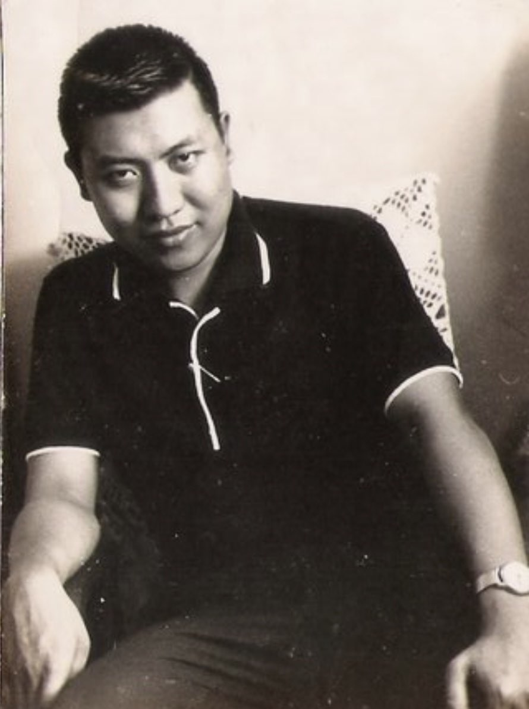
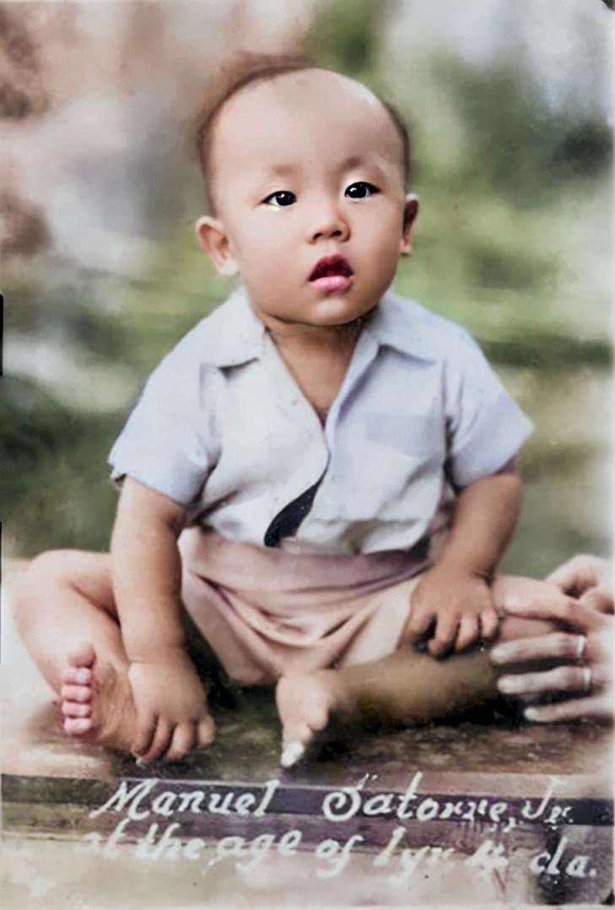
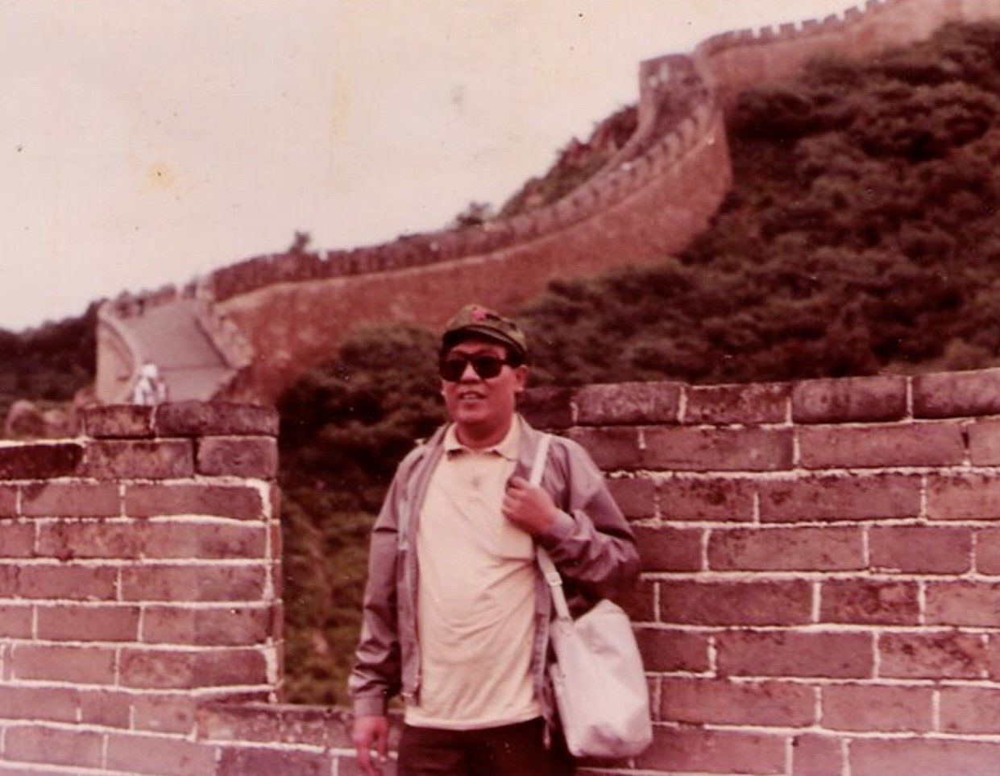
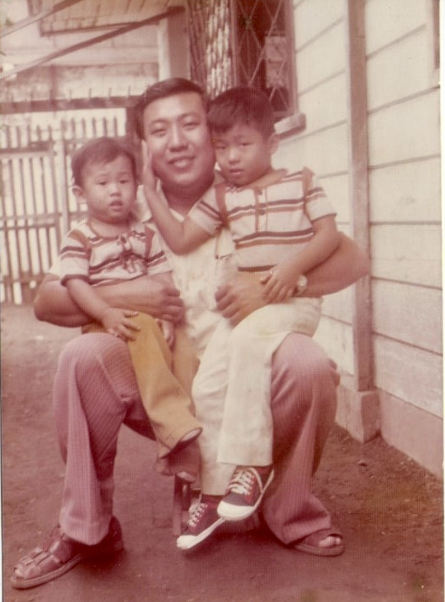
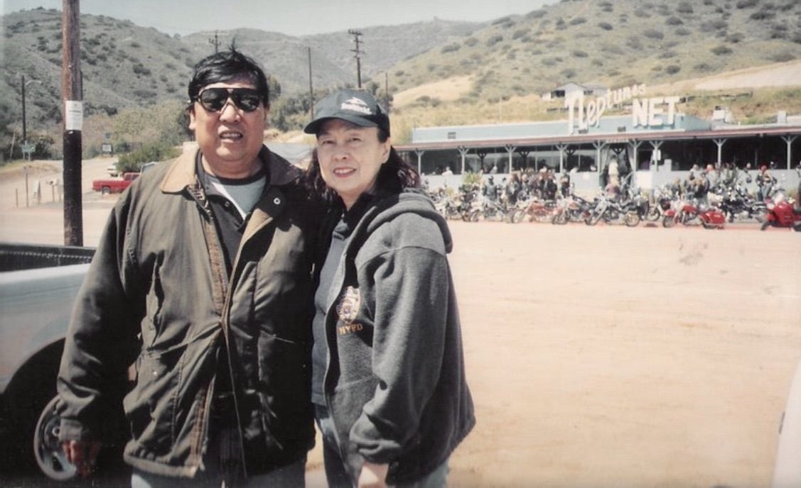
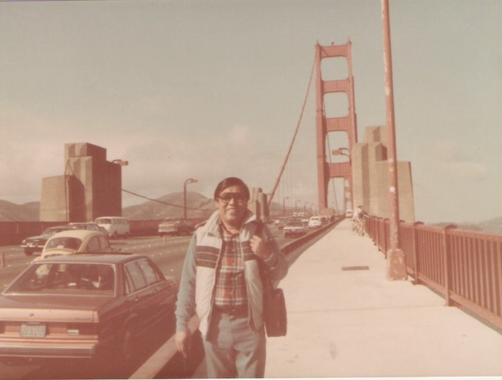

Cebu City · Parian EditionSpecial Memorial IssueVol. I · No. 1
The Cross & the Byline
Kid from Parian
The Life and Words of Manuel “Maning” S. Satorre Jr. · 1943–2023

Manuel S. Satorre Jr. · Young portrait, undated
In Loving Memory · A Special Edition
A Boy from Old Cebu Who Grew Up to Tell Cebu’s Stories.
Manuel S. Satorre Jr. · 1943 – 2023 · Aged 80
He was, before anything else, a kid from Parian — the old quarter of Cebu where stone houses,
church bells, and the long shadow of Magellan’s Cross taught him about faith, family, and
memory. He grew up to spend a lifetime putting Cebu on the record: as a lawyer, journalist,
editor, columnist, broadcaster, and environmental advocate whose byline carried the city’s
news for more than six decades.
This special edition is for him — husband to Victoria, father to Jet, Jerome, and Mark,
grandfather, brother, uncle, mentor, and Outstanding Carolinian. A documentary, a newspaper,
and a family archive, all at once.
Section A · Parian Beginnings
A Kid from Parian.
Old Cebu, family roots, and the streets that raised him.

“Manuel Satorre Jr., at the age of 1 yr & 4 mos.” · The earliest known photograph.
Born in 1943 in Cebu City, Manuel S. Satorre Jr. — Maning to family, Jun to friends,
Junior on the masthead — came of age in Parian, the historic quarter at the heart of old Cebu.
Parian was traders and clergymen, sailors and printers; it was incense in the morning,
newsprint in the afternoon, and the bells of the basilica every evening. The grid of the
old streets and the worn coral-stone of its houses would stay with him for the rest of his life.
He was a sharp, observant child in a city that rewarded sharp eyes. By 16, he was already
working — not at his studies, but at a newspaper. The streets that raised him were the
same streets he would later cover: Customs, the BIR, City Hall, the police beat. Long before
he carried a press card, Parian had already taught him how to read a city.
Section B · The Cross
Faith, Family, and Magellan’s Cross.
A moral compass anchored in Cebu’s oldest landmark.
A few blocks from Maning’s childhood streets stood Magellan’s Cross — planted in
1521, the city’s oldest symbol of faith and the place where Cebu’s long Catholic story
begins. For a Parian boy, the Cross was not a tourist landmark. It was geography. It was a way
of orienting yourself, morally and literally, inside Cebu.
Maning carried that orientation into the rest of his life. He wrote one of his earliest
recorded pieces — “Cebu and the Santo Niño” in 1965 —
about the same faith that had been quietly shaping him. Friends and family remembered his
grounding: a man who believed in plain truth, owed loyalty to family first, and treated his
word as a contract. The Cross stood behind everything else — the byline, the public voice,
the long career — as the still point at the center of a busy life.
“Parian is where I’m from. Cebu is what I write about. The Cross is what I keep coming back to.”
— In the spirit of Maning
Section C · The Byline
A Life on the Record.
Sixty years of journalism, editing, broadcasting, and the law.
He started at 16, as a proofreader for the Cebu tabloid Newsday. Within a year he was
a cub reporter on the Customs, BIR, City Hall, and police beats. He wrote for the Morning Times
and became the youngest correspondent for the Philippine News Service (PNS). He contributed
to The Freeman in its weekly newsmagazine era. On the air, he worked stints at RMN/DYHP,
Channel 13, Channel 3, and DYRC — and pioneered the first “Balita-Patrol” in
Cebu, riding the DYHP Kombi with a Grundig tape recorder in his lap.
In 1967, still in his twenties, he founded View Magazine and the Cebu News &
Information Service (CNIS). When Martial Law was declared in September 1972, both were
shuttered — one of the quiet costs of his early ambition. He came back. In 1974 he
organized the PNA Cebu bureau as its officer-in-charge, recruiting Henry Redula, Joe Martinez,
Elma Abellanosa-Cartilla, and Manuel Oyson Jr.
Through the 1980s and 1990s he helped lead Vistas: The Weekly Newsmagazine as Editor
and Business Manager, wrote a column for SunStar until 1990, and then moved on to help
create and edit Newstime Daily. Colleagues remembered the rhythm of his newsroom: four
articles a day, last-minute assignments, fast priorities — and a booming voice that could
carry across a press room.
He was also a lawyer, and he wrote like one when he needed to: precise, on the record, willing
to take the heat. In 1992 he was subpoenaed (and did not attend) a House committee hearing in
Cebu on alleged “media corruption” — a small, telling moment in a career that
never courted convenience.
Section D · The Cebu Beat
The Public Voice of Cebu.
Press club president, columnist, and host of the city’s conversation.
In 1971, Maning was elected President of the Association of Cebu Journalists. He used the chair
the way he used a byline — to make space. He hosted Senator Benigno “Ninoy”
Aquino at ACJ fellowship meetings, brought national figures into Cebuano rooms, and that same
year represented the Philippines on the U.S. Army-Pacific Friendship Mission to Hawaii. In 1972
he led a four-person Filipino media delegation to Taiwan.
Around Cebu he was unmistakable: a largely-built man with a booming voice, a black
attaché case, dark glasses, and a light-blue VW Beetle (plates: 999) parked at whatever
story needed him that day. He covered the city he came from with the seriousness of someone
who never forgot it had raised him.
On the Beat — Affiliations
Newsday · Morning Times · PNS · The Freeman
RMN / DYHP · Ch. 13 · Ch. 3 · DYRC
View Magazine & CNIS — founder, 1967
ACJ President — 1971
PNA Cebu Bureau — organizer & OIC, 1974
Vistas: The Weekly Newsmagazine — Editor & Business Manager
SunStar — Columnist (through 1990)
Newstime Daily — Editor
Section E · The Environmental Beat
The Green Pen.
From Cebu’s newsroom to the world conferences on the environment.
In his later career, Maning gave Cebu’s reporting a wider horizon. He founded and led
the Philippine Environmental Journalists, Inc. (PEJI) as its President, and chaired the Asian
Federation of Environmental Journalists. He served as the Southeast Asia Focal Point for the
GEF-NGO Network under the IUCN World Conservation Union, putting Filipino voices into rooms
where the region’s rivers, reefs, and forests were being discussed.
In October 1998, at the 6th World Conference of Environmental Journalists in Colombo, Sri Lanka,
the Asia-Pacific Forum of Environmental Journalists awarded him the International Green Pen
Award. His work was cited in publications by the Asian Development Bank
(Water in Asian Cities) and JICA reports; in 1999 he authored
“How Media can Help in Marine Environmental Protection and Management”
for a PEMSEA workshop.
His argument, made for decades, was simple: the media tends to ignore environmental issues
until there is an immediate tragedy. He pushed for journalist training programs that would
change that — long before climate became daily news.

On assignment abroad · The Great Wall.
Section F · The Carolinian Legacy
Two Outstanding Carolinians, One Family.
Maning and Victoria, recognized by the University of San Carlos.
The University of San Carlos — one of the oldest universities in Asia — conferred
the title of Outstanding Carolinian on both Manuel S. Satorre Jr. and his wife,
Victoria Ang-Satorre, the former Dean of the College of Commerce. It is an
unusual distinction: husband and wife, in the same family, honored as exemplars by the same
institution that shaped them.
For Cebu’s Carolinian community, the two were a single legacy — education on one
side of the breakfast table, journalism on the other, faith threaded through both. The honor
belongs to the family and to USC equally.
Section G · Family Edition
Husband, Father, Grandfather, Anchor.
The man behind the byline.
Maning was husband to Victoria, father to Jet, Jerome, and Mark, and grandfather to a family
that stretched across Cebu and across an ocean. He was also a brother, uncle, mentor, and
family anchor — the person whose voice on the line steadied a room.

On the porch · With two of his boys

Maning & Victoria · Neptune’s Net

The Golden Gate · San Francisco
At home he was famously demanding of deadlines — four articles a day was not a metaphor
— but family came first under the noise. He drove a light-blue VW Beetle (plates: 999),
carried a black attaché case, and made room at his table for every kid who wandered in.
Section H · The Archive
Articles, Columns, and Clippings.
A working archive of his words and work. To be expanded as the family adds to it.
“Cebu and the Santo Niño”1965 · Early feature
“President Diosdado Macapagal Set RP Independence Day on June 12”Historical feature
“How Media can Help in Marine Environmental Protection and Management”1999 · PEMSEA workshop paper
SunStar columnThrough 1990
Vistas: The Weekly Newsmagazine1981–1984 · Editor & Business Manager
International Green Pen Award — APFEJ, Colombo, October 1998
Outstanding Carolinian — University of San Carlos
Cited in ADB Water in Asian Cities & JICA reports
President — Philippine Environmental Journalists, Inc. (PEJI)
Chairman — Asian Federation of Environmental Journalists
SEA Focal Point — GEF-NGO Network (IUCN)
Photos, columns, broadcasts, videos, awards, and family documents will be added here as the
family contributes. If you have a clipping, recording, or photograph of Maning, please reach
out so we can include it.
Section I · On the Record
Memories, Tributes & Stories.
For family, friends, colleagues, Carolinians, and the Cebu community.
This is the guestbook page — a place to share a memory, a story, a column you remember,
or a moment with Maning that you want kept on the record.
He taught a city how to read itself. Cebu was his beat, but his real story
was always faith and family.
— The Satorre Family
Sign the Guestbook
Family, friends, colleagues, Carolinians, journalists, and the Cebu community are invited to share a memory.